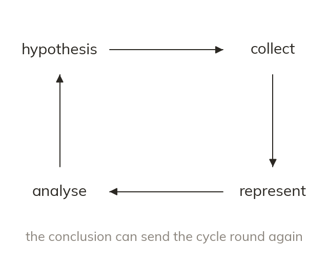

The data handling cycle
An investigation runs through four stages: hypothesis, collect, represent, analyse. Its conclusion can send the cycle round again. A hypothesis is a statement, not just a question.
An investigation runs through four stages - hypothesis, collect, represent, analyse - ending in a conclusion that can send the cycle round again. A hypothesis is a statement the data can support or contradict, not just a question.